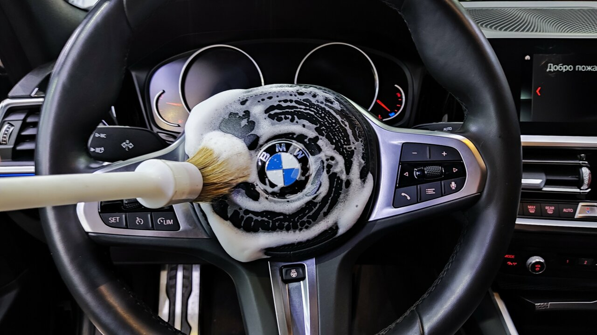

Детейлинг
мойка кузова
Бережная мойка с вниманием к каждой зоне кузова. Для тех, кто любит возвращаться к чистому автомобилю.
от 1 900 ₽уточнить состав ↗Автомойка и детейлинг в центре Москвы, где можно оставить автомобиль, выпить кофе и забрать его в идеальном состоянии.
Вся забота об автомобиле — в одном месте: от быстрой мойки кузова до глубокой химчистки и сезонного шиномонтажа.
Минимальные цены из карточки студии. Точную стоимость определим после осмотра автомобиля.
Бережная мойка с вниманием к каждой зоне кузова. Для тех, кто любит возвращаться к чистому автомобилю.
от 1 900 ₽уточнить состав ↗Возвращаем глубину цвета и чистоту отражения лакокрасочному покрытию.
от 15 000 ₽уточнить состав ↗Убираем следы поездок, пятна и запахи. Салон снова хочется чувствовать.
от 12 000 ₽уточнить состав ↗Гидрофобность, блеск и дополнительная защита поверхности.
от 6 000 ₽уточнить состав ↗Сезонная переобувка, балансировка и спокойствие на дороге.
от 2 500 ₽уточнить состав ↗Быстро освежить интерьер перед встречей, поездкой или продажей автомобиля.
от 900 ₽уточнить состав ↗Уютная клиентская зона с кофе, Wi‑Fi и видом на мойку. Не нужно строить день вокруг сервиса — сервис подстраивается под ваш день.
Светлые боксы, открытый процесс и клиентская зона с видом на автомобиль. Вы понимаете, что происходит на каждом этапе.
 01 / БОКСЫ · АВТОМОБИЛЬ ВСЕГДА В ПОЛЕ ЗРЕНИЯ
01 / БОКСЫ · АВТОМОБИЛЬ ВСЕГДА В ПОЛЕ ЗРЕНИЯ
02 / ДЕТАЛИ · РАБОТАЕМ БЕРЕЖНОПередвиньте ползунок. Так меняется поверхность после аккуратной полировки.
ИИ-иллюстрация эффекта для демонстрации. Не является реальным кейсом Aqua Rooms.
«Домывать ничего не приходится»
«Моюсь тут уже 10 лет. Очень качественно работают. В комнате ожидания чисто и можно попить кофе. Команда отличная, сотрудники вежливые и бережно относятся к автомобилям.»
Александр К. · Яндекс Карты«Результат выше всяких похвал»
«Делал химчистку салона. От пятен и разводов на потолке не осталось и следа. Персонал очень вежливый и отзывчивый.»
Никита С. · Яндекс Карты«Вся мойка на ваших глазах»
«Отличная комната ожидания. Можно выпить чашечку кофе или лимонад. А главное — вся мойка на ваших глазах.»
Кеша · Яндекс КартыПросто делаем автомобиль чистым, ухоженным и приятным — без театра вокруг процесса.
Aqua Rooms — это автомобильный сервис в центре Москвы с понятным набором услуг и открытой зоной ожидания. Можно приехать на мойку, доверить нам салон, подготовить автомобиль к сезону или добавить защитное покрытие.
Собрали ответы на вопросы, которые чаще всего задают перед приездом.
Да, в карточке Aqua Rooms указан режим 24/7. Перед ночным визитом лучше позвонить и уточнить загрузку боксов.
В карточке указана предварительная запись, но доступность зависит от текущей загрузки. Позвоните заранее, чтобы не ждать.
Минимальная цена в карточке — 1 900 ₽. Итог зависит от категории автомобиля и состава работ.
Да. Химчистка салона указана от 12 000 ₽, комплексная уборка салона — от 900 ₽.
Да, у Aqua Rooms есть уютная зона ожидания с кофе и видом на мойку, а также Wi‑Fi и кафе.
Москва, Ружейный переулок, 3. Ближайшее метро — Смоленская, около 770 метров.